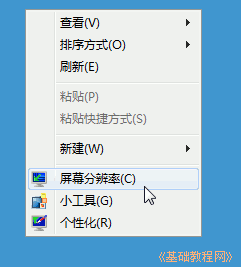
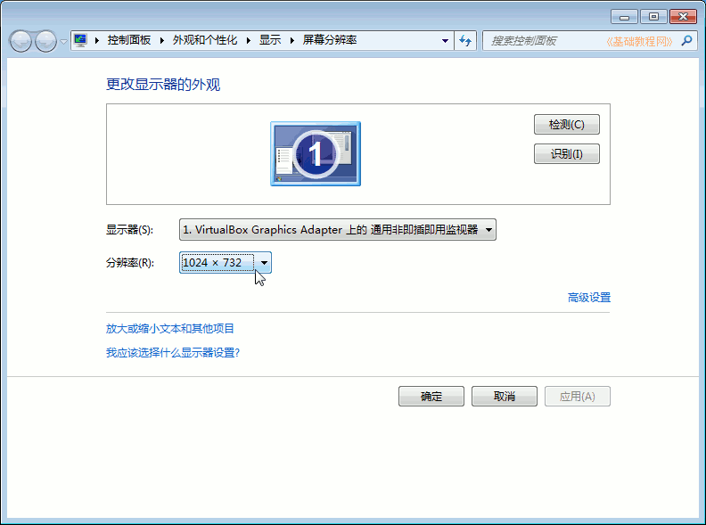
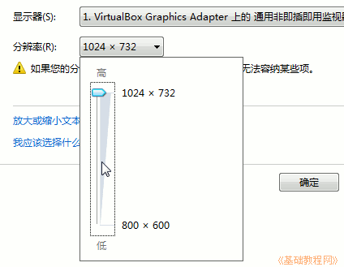
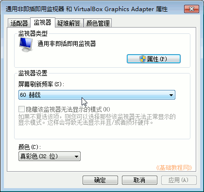

Windows7 基础入门教程
作者：TeliuTe 来源：基础教程网
十、设置分辨率 返回目录 下一课屏幕分辨率越大，窗口显示的内容就越多，但是字体也愈小；
1、分辨率
1）在桌面空白处点右键，选择“屏幕分辨率”菜单；

2）在出来的面板中，点击“分辨率”旁边的下拉按钮；

3）拖动滑块就可以改变分辨率大小，一般在显示器的保护膜上写有推荐的大小；

4）点右边的“高级设置－监视器”，可以设置屏幕刷新率，液晶显示器一般是60；

5）改好以后点“确定”，屏幕闪一下，出来一个提示框询问是否保留，如果正常就点保留，或者过一阵会自动还原，
分辨率或刷新率出问题，可以进到安全模式，然后进行调整或重新安装显卡驱动；
本节学习了设置屏幕分辨率的基础知识，如果你成功地完成了练习，请继续学习下一课内容；
本教程由86团学校TeliuTe制作|著作权所有
基础教程网：>http://teliute.org/
美丽的校园……
转载和引用本站内容，请保留作者和本站链接。